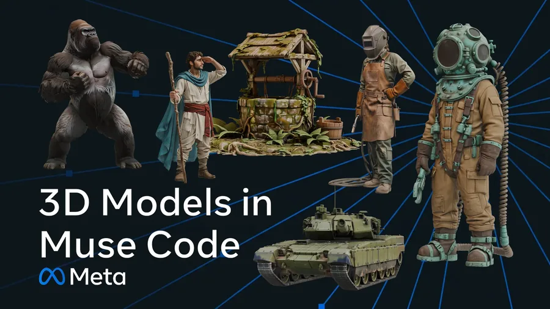
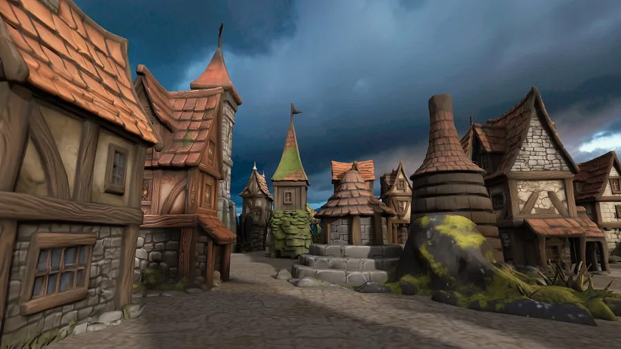
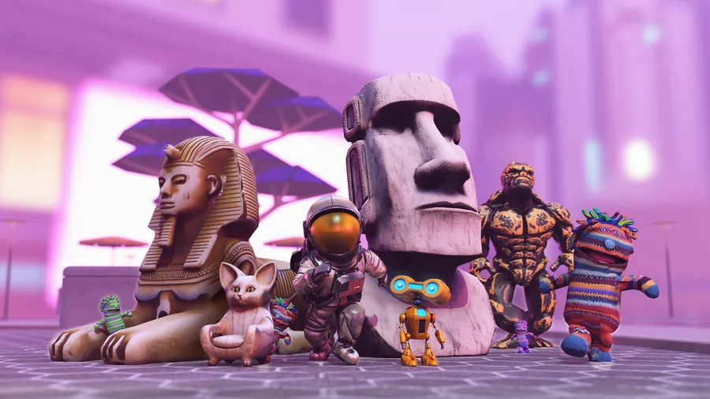
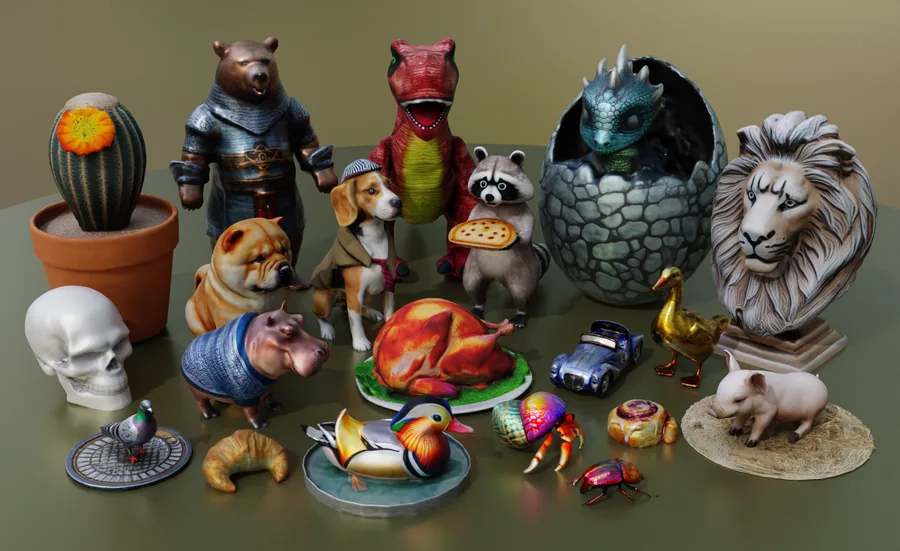

AssetGen: Deployable 3D Asset Generation at Interactive Speed
arXiv 2026 new
Our new AssetGen version delivers production-ready 3D meshes with SOTA quality in 30 seconds, i.e. 3x-6x faster than competitors!
Research Scientist at Meta
I am a Research Scientist at Meta working on computer vision, with an emphasis on generative models and 3D. I did my PhD in the amazing Imagine lab at ENPC under the guidance of Mathieu Aubry. During my PhD, I was fortunate to work with Jean Ponce (Inria), Matthew Fisher (Adobe Research), Alyosha Efros and Angjoo Kanazawa (UC Berkeley). Before that, I completed my engineer's degree (= M.Sc.) at Mines Paris.
My research is focused on learning things from images without annotations, with a particular interest in recovering the underlying 3D (see representative papers). I am always looking for PhD interns, feel free to reach out!




arXiv 2026 new
Our new AssetGen version delivers production-ready 3D meshes with SOTA quality in 30 seconds, i.e. 3x-6x faster than competitors!
CVPR 2025
We introduce an LRM capable of recovering illumination, geometry and material properties of real object scenes from a few posed images.